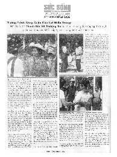
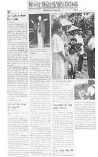
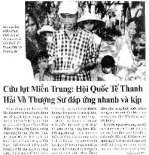
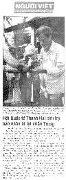

| Revue de presse |
dans le centre d'Au Lac |
|  |
Extrait du Suc Song, Etats-Unis |
En novembre 1999, d'immenses inondations ont dévastées le centre d'Au Lac. En apprenant cette tragédie et en prenant exemple sur la compassion de Maître, les disciples des Etats-Unis, d'Australie et du Canada ont fait un don de 104 576.88 $US. De nombreux disciples sont allés en Au Lac pour distribuer eux-mêmes ces contributions aux victimes. Quand ils sont revenus aux Etats-Unis, de nombreux journaux aulaciens ont écrit des articles sur ces actions de secours car nos pratiquants étaient le premier groupe à aller là-bas pour apporter de l'aide aux victimes.
A Thua Thien, de sérieux dommages ont causé des embouteillages. Les volontaires ont dû utiliser un petit bateau pour atteindre les villages le long de la rivière Huong. De nombreux villages et hameaux ont été balayés. Les volontaires ont apporté de l'aide à un grand nombre de victimes. Parfois, il y avait 40 familles dans un seul emplacement.
La situation à Quang Tri n'était pas mieux, des maisons inondées, des corps flottant, des enfants sans surveillance, des écoles écroulées et les campagnes complètement immergées sur une très grande étendue. Ici, les victimes faisaient face à la plus sérieuse des dévastations qui n'est pas prête d'être réparée. Les volontaires de l'Association Internationale du Maître Suprême Ching Hai ont décidé qu'en plus de l'aide apportée à chaque famille, ils donneraient au village un montant de 60000000 de Dong aulacien pour aider les fermiers à acheter des graines pour la saison à venir.
A Quang Nam, les volontaires ont aussi visité ces villages près des villes très touchées par les inondations. Au début de 1999, les volontaires étaient aussi venus dans cette région aider les victimes de l'ouragan.
Partout, on pouvait voir des scènes dramatiques. Des sols dévastés, des toits branlants, des cabanes dépouillées, des visages désolés, des yeux tristes et sans vie, des nouvelles tombes alignées, une atmosphère triste, remplie de pleurs et de cris laissés sur les morts.
Les volontaires ont travaillé sans interruption, réconfortant chaque victime et distribuant une aide financière directement à chaque famille. Les pertes ont été estimées en une fois pour chaque famille. Les familles peu touchées recevaient 300000 Dong VN alors que celles qui étaient touchées plus sérieusement recevaient 2000000 de Dong VN. Les familles qui ont perdu leur maison et qui ont de nombreux enfants ou qui ont perdu des membres de la famille ont reçu un montant de 500000 Dong VN. Certaines écoles ont reçu également une aide financière pour reconstruire leur salle de classe (Note : 1 $US = 14000 Dong VN)
|   |
Far Eastern Daily News | ||
| |||
|  |
The Aulacese People, vendredi 26 novembre 1999, la 21ème année de publication - Nø. 5102 (Original en Aulacien) Une victime des inondations dans le centre d'Au Lac et son enfant recevant de l'argent de la part d'un représentant de l'Association Internationale du Maître Suprême Ching Hai qui est venu dans le centre d'Au Lac le 19/11/99 en tant que secouriste. | ||